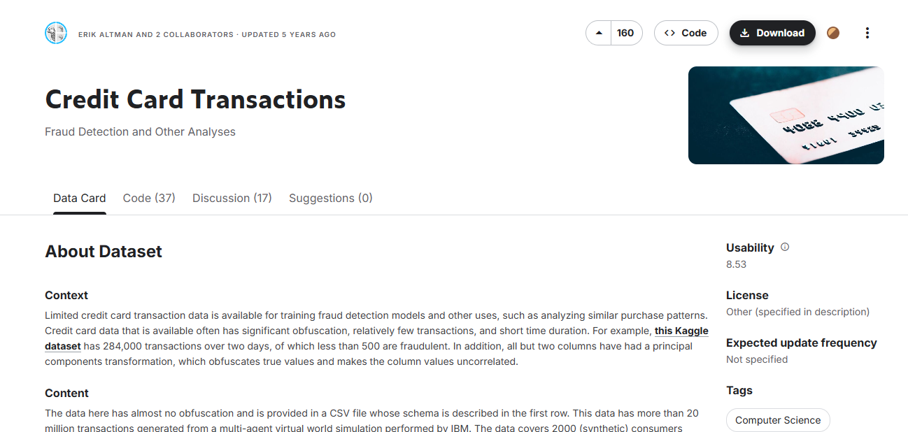
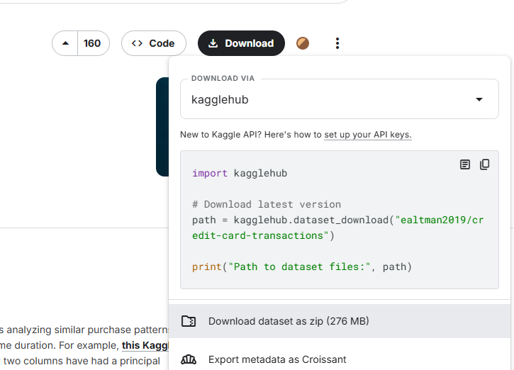
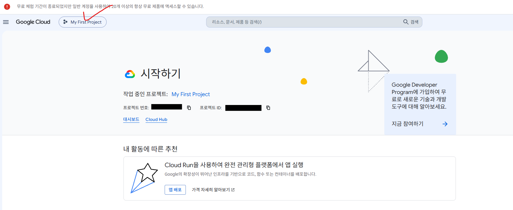

FinDA 7주차 1일차 — BigQuery 입문, 데이터 적재, 기초 쿼리¶
7주차 Day 1 (금, 3시간) 강의안. BigQuery를 처음 만나는 수강생이 클라우드 DW의 개념을 이해하고, TabFormer 카드 거래 데이터를 본인 프로젝트에 직접 적재한 뒤, 기초 집계 쿼리까지 실행하는 것이 목표입니다.
오늘의 구성¶
| 순서 | 세션 | 시간 |
|---|---|---|
| (1) | Session 1-1. BigQuery 소개 — 왜 실무는 클라우드 DW를 쓰는가 | 50분 |
| (2) | 쉬는 시간 | 10분 |
| (3) | Session 1-2. 데이터 적재 — TabFormer를 내 BigQuery에 올리기 | 50분 |
| (4) | 쉬는 시간 | 10분 |
| (5) | Session 1-3. 데이터 확인과 기초 집계 | 60분 |
오늘의 학습 목표:
- (1) 로컬 DB와 클라우드 DW의 차이를 설명할 수 있다 (서버리스, 컬럼 지향 저장, 처리 바이트 과금)
- (2) Kaggle의 TabFormer 데이터를 본인 GCP 프로젝트의 BigQuery에 적재할 수 있다
- (3) 적재된 테이블을 확인하고, 기초 집계 쿼리로 비즈니스 질문에 답할 수 있다
Session 1-1. BigQuery 소개 (50분)¶
도입: 우리는 지금 어디에 있나 (10분)¶
사전 설문 결과를 공유드리면,
- SQL 자체는 과반이 SQLD 자격증 또는 전공 수업 수준으로 이미 알고 있습니다. 사전 설문 응답자 9명 기준으로 기본 SELECT는 8명, GROUP BY 집계는 7명이 직접 작성할 수 있다고 답했습니다.
- 반면 BigQuery는 실질 사용 경험자가 사실상 없고, GCP 콘솔을 써 본 사람은 0명입니다.
그래서 이번 주의 약속은 이렇습니다. SQL 문법을 처음부터 다시 가르치지 않습니다. 대신 여러분이 이미 아는 SQL을 "실무가 실제로 쓰는 환경(클라우드 데이터 웨어하우스)"에서 다시 굴려 보고, 그 환경에서만 생기는 감각(비용, 규모, 협업)을 익힙니다.
이번 주 결과물 미리보기:
- (1) 오늘 (1일차): 약 2,400만 행 카드 거래 데이터를 본인 BigQuery 프로젝트에 적재하고 기초 집계까지 실행
- (2) 2일차: 금융 데이터 분석 직무의 실제 모습과 실습 데이터 3개 테이블 심층 이해 → Day 2 강의안
- (3) 3일차: 분석하기 좋은 형태로 데이터를 재조립하는 "데이터 마트" 설계와 구축 → Day 3 강의안
왜 실무는 클라우드 DW를 쓰는가 (10분)¶
질문으로 시작합니다. "오늘 받을 거래 데이터는 CSV로 약 2.4GB, 약 2,400만 행입니다. 엑셀로 열면 어떻게 될까요?"
- 엑셀은 시트당 약 104만 행이 한계입니다. 열리지도 않습니다.
- "그럼 노트북에 MySQL을 깔고 넣으면 되지 않나요?" — 됩니다. 하지만 실무에서는 다음 세 가지 벽에 부딪힙니다.
로컬 DB의 세 가지 한계:
- (1) 데이터 크기: 오늘 데이터는 2.4GB지만, 실제 카드사의 거래 로그는 수십억 행 그리고 수 TB 단위입니다. 노트북의 디스크와 메모리로는 감당이 안 됩니다.
- (2) 협업: 우리 기수 40명이 같은 데이터를 분석한다고 각자 PC에 CSV를 복사하면, 누구 데이터가 최신인지 아무도 모르는 "버전 지옥"이 됩니다. 실무 팀도 마찬가지입니다.
- (3) 관리: DB 서버는 설치, 백업, 장애 대응, 용량 증설을 누군가 계속 해야 합니다. 분석가가 그 일까지 하면 분석할 시간이 없습니다.
그래서 실무의 답은 "데이터를 한 곳(클라우드 DW)에 두고, 모두가 쿼리로 접근한다"입니다. 전체 데이터 흐름에서 BigQuery가 어디에 있는지 봅시다.
flowchart LR
A["수집<br/>(API, 로그, CSV)"] --> B["운영 DB (OLTP)<br/>MySQL, PostgreSQL 등"]
B --> C["클라우드 DW (분석)<br/>BigQuery"]
C --> D["BI 도구와 리포트<br/>대시보드"]
D --> E["의사결정"]- 여러분이 지금까지 배운 SQL 환경(MySQL 등)은 주로 B의 세계, 즉 서비스를 "돌리기 위한" 데이터베이스입니다.
- 이번 주 우리가 들어가는 곳은 C, 즉 데이터를 "분석하기 위한" 창고입니다. 같은 SQL을 쓰지만 목적과 설계가 다릅니다. 이 차이가 오늘 배울 세 가지 핵심 개념으로 이어집니다.
핵심 개념 세 가지 (15분)¶
(1) 서버리스 — 발전기 대신 콘센트¶
전기가 필요하다고 발전기를 사서 직접 돌리는 집은 없습니다. 콘센트에 꽂고, 쓴 만큼 요금을 냅니다.
- 발전기 방식 = 직접 DB 서버 구축: 서버 사양 선정, 설치, 백업, 장애 대응, 확장을 모두 우리가 담당
- 콘센트 방식 = BigQuery(서버리스): 그 모든 것을 구글이 담당하고, 우리는 쿼리만 작성
"서버리스(serverless)"는 서버가 없다는 뜻이 아니라, 서버 관리를 우리가 신경 쓸 필요가 없다는 뜻입니다. 쿼리를 던지면 구글의 수많은 서버가 알아서 나눠 처리하고 결과만 돌려줍니다.
(2) 컬럼 지향 저장 — 데이터를 세로로 자른다¶
전통적인 운영 DB는 데이터를 "행 단위"로 저장합니다. 분석용 DW는 "컬럼 단위"로 저장합니다.
| 저장 방식 | 저장 형태 (개념) | 잘하는 일 |
|---|---|---|
| 행 지향 (MySQL 등) | (1, 김OO, 170cm), (2, 이OO, 165cm), ... 한 사람의 정보가 한 덩어리 | "3번 회원 정보 조회 또는 수정" 같은 건별 처리 |
| 컬럼 지향 (BigQuery) | (1, 2, 3, ...), (김OO, 이OO, ...), (170, 165, ...) 같은 컬럼끼리 한 덩어리 | "전교생 평균 키" 같은 대량 집계 |
비유: 전교생 명부에서 "평균 키"를 구한다고 합시다. 학생별 카드를 한 장씩 넘기며 키를 찾는 것(행 지향)보다, "키만 모아 둔 목록" 한 장을 쭉 읽는 것(컬럼 지향)이 압도적으로 빠릅니다. 분석 쿼리는 대부분 "소수의 컬럼을 전체 행에 대해 집계"하는 형태라, 컬럼 지향이 유리합니다.
그리고 이 저장 방식이 곧 비용 모델과 직결됩니다. BigQuery는 쿼리가 읽은(스캔한) 컬럼의 데이터만 처리합니다.
(3) 처리 바이트 과금 — 담은 만큼 계산하는 샐러드바¶
BigQuery의 쿼리 요금은 "쿼리가 스캔한 데이터 양(처리 바이트)"으로 매겨집니다. 무게 단위로 계산하는 샐러드바와 같습니다.
SELECT *= 접시에 모든 메뉴를 다 담는 것. 필요 없는 컬럼까지 전부 스캔되어 처리 바이트가 커집니다.- 필요한 컬럼만
SELECT= 먹을 만큼만 담는 것. 스캔량과 비용이 줄어듭니다. LIMIT 10을 붙여도 스캔량은 줄지 않습니다. 결과 화면에 10행만 보여줄 뿐, 스캔은 이미 끝난 뒤입니다.
GCP 콘솔과 BigQuery Studio 화면 구성 (10분)¶
강사 화면을 함께 보며 구조를 익힙니다. 직접 조작은 Session 1-2에서 합니다.
- (1) GCP 콘솔 (console.cloud.google.com): 구글 클라우드의 관문. 모든 리소스는 "프로젝트"라는 지붕 아래에 속합니다. 상단 바에서 현재 프로젝트를 항상 확인하세요.
- (2) BigQuery Studio: 콘솔 검색창에 "BigQuery"를 치면 진입합니다. 화면 구성은 세 부분입니다.
- 좌측 Explorer: 프로젝트 > 데이터셋 > 테이블의 트리 구조
- 중앙 쿼리 편집기: SQL을 작성하고 실행하는 곳
- 우측 상단 처리 바이트 미리보기: 쿼리를 실행하기 전에 "이 쿼리는 실행 시 N MB를 처리합니다"라고 알려주는 표시. 오늘부터 모든 쿼리에서 실행 전에 이 숫자를 읽는 습관을 들입니다.
📷 스크린샷 추가 예정: (BigQuery Studio 첫 화면 — Explorer, 쿼리 편집기, 우측 상단 처리 바이트 미리보기 위치에 빨간 박스 표시)
📷 스크린샷 추가 예정: (쿼리 실행 전 "이 쿼리를 실행하면 N MB가 처리됩니다" 미리보기 문구 확대 캡처)
무료 한도와 비용 안전장치 (5분)¶
"클라우드 = 요금 폭탄"이라는 걱정부터 내려놓읍시다. 학습용으로는 무료 한도가 넉넉합니다.
- (1) 무료 한도: 매월 쿼리 처리 1TB 그리고 저장 10GB 수준이 무료입니다. 오늘 데이터(약 2.4GB)는 전체를 스캔해도 무료 한도의 0.25% 수준입니다.
- (2) 샌드박스와 무료 크레딧: 신용카드 등록 없이 BigQuery 샌드박스로 시작할 수 있습니다 (테이블 60일 만료 등 일부 제한). 신규 가입 시 $300 무료 크레딧 안내가 뜨기도 합니다.
- (3) 처리 바이트 미리보기 습관: 실행 버튼을 누르기 전에 우측 상단 숫자를 읽습니다. 실무에서 잘못 짠 쿼리 하나가 수백 달러를 태우는 사고는 이 습관 하나로 대부분 예방됩니다.
- (4) 최대 청구 바이트 설정: 쿼리 설정의 고급 옵션에서 "Maximum bytes billed"를 걸어 두면, 그 이상 스캔하는 쿼리는 실행 자체가 거부됩니다. 안전벨트로 기억해 두세요.
무료 한도와 요금 정책은 바뀔 수 있으니 BigQuery 요금 문서에서 최신 내용을 확인하세요.
Session 1-2. 데이터 적재 — TabFormer를 내 BigQuery에 올리기 (60분)¶
사전 준비물¶
- (1) Google 계정 (GCP 콘솔 로그인용)
- (2) Kaggle 계정 (구글 계정으로 가입 가능)
- (3) Google Colab 접속 가능 여부 확인 (users 파일 전처리에 사용)
STEP 0. 이 실습의 큰 그림 (5분)¶
flowchart TD
A["Kaggle 다운로드"] --> B{"파일 크기"}
B -->|"작은 파일 (users, cards)"| P["Colab 전처리<br/>users에 user_id 부여"]
P --> C["BigQuery 콘솔 직접 업로드"]
B -->|"큰 파일 약 2.4GB"| D["GCS 버킷 업로드"]
D --> E["GCS에서 BigQuery로 로드"]
C --> F[("BigQuery 테이블")]
E --> F
F --> G["적재 검증"]경로를 나누는 이유: 거래 파일(card_transaction.v1.csv)이 약 2.4GB인데, BigQuery 콘솔에서 로컬 파일을 직접 올리는 방식은 작은 파일용입니다 (직접 업로드 한도가 약 10MB 수준). 그래서 거래 파일은 이 경로로는 불가능하고, Google Cloud Storage(GCS)라는 클라우드 저장소에 먼저 올린 뒤 거기서 BigQuery로 로드합니다.
그리고 작은 파일 중 users는 적재 전에 반드시 전처리가 필요합니다 (STEP 3에서 상세히).
STEP 1. Kaggle에서 데이터 받기 (10분)¶
데이터셋: Credit Card Transactions (ealtman2019)
두 가지 방법 중 편한 쪽을 고르면 됩니다.
방법 1-A. 웹에서 직접 받기 (가장 간단)¶
- (1) 위 링크 접속 후 Kaggle 로그인
- (2) 페이지의 Download 버튼 클릭 → 전체 파일이 하나의 zip으로 다운로드
- (3) zip 압축 해제


방법 1-B. Kaggle API로 받기 (권장: 엔지니어링 연습과 재현성)¶
- (1) 터미널 또는 Cloud Shell에서 설치
- (2) Kaggle API 토큰 발급: Kaggle 우측 상단 프로필 → Settings → API → "Create New Token" →
kaggle.json파일이 다운로드됨 - (3) 토큰 배치
- (4) 데이터 다운로드와 압축 해제
받은 파일 확인¶
압축을 풀면 대략 다음 파일들이 보입니다.
| 파일 | 내용 | 대략 크기 |
|---|---|---|
sd254_users.csv |
사용자 약 2,000명 | 작음 (수백 KB) |
sd254_cards.csv |
카드 정보 | 작음 (수백 KB) |
card_transaction.v1.csv |
거래 약 2,400만 건 | 큼 (약 2.4GB) |
mcc_codes.json |
MCC 업종 코드 매핑 | 작음 |
파일 구성은 데이터셋 버전에 따라 다를 수 있으니, 압축 해제 후 실제 목록을 확인하세요.
mcc_codes.json은 업종 코드 매핑인데 일반 JSON 객체 형태라 BigQuery에 바로 적재하기 어렵습니다 (BigQuery는 줄 단위 JSON을 요구). 이 파일은 2일차 데이터 상세 소개에서 별도 룩업 테이블로 다룹니다 → Day 2 강의안
STEP 2. GCP 프로젝트와 BigQuery 준비 (10분)¶
2-1. 프로젝트 만들기¶
- (1) console.cloud.google.com 접속 (Google 계정 로그인)
- (2) 상단 프로젝트 선택 → "새 프로젝트" → 이름 입력 (예:
finda-week7) → 만들기 - (3) 처음이라면 신규 사용자 대상 무료 크레딧($300) 안내가 뜹니다

2-2. BigQuery 들어가기¶
- (1) 콘솔 좌측 메뉴 또는 검색창에서 "BigQuery" 검색 → BigQuery Studio 진입
- (2) 좌측 Explorer 패널에 본인 프로젝트가 보이는지 확인
비용이 걱정된다면 Session 1-1의 무료 한도 내용을 떠올리세요. 우리 데이터는 무료 한도 안에 충분히 들어옵니다.
2-3. 데이터셋(dataset) 만들기¶
BigQuery에서 "데이터셋"은 테이블을 담는 폴더 같은 개념입니다.
- (1) Explorer에서 프로젝트 옆 점 세 개 → "데이터셋 만들기"
- (2) 데이터셋 ID:
tabformer - (3) 위치(Location): 예)
US또는asia-northeast3(서울)
⚠️ 위치 주의: 데이터셋 위치와 STEP 4에서 만들 GCS 버킷 위치를 똑같이 맞추세요. 다르면 GCS에서 BigQuery로 로드가 안 됩니다.
STEP 3. 작은 파일 적재 (users, cards) — Colab 전처리 후 콘솔 업로드 (15분)¶
3-1. users의 유명한 함정: 조인 키가 없다¶
⚠️ 적재 전에 반드시 읽으세요.
sd254_users.csv에는 조인 키 컬럼이 없습니다. transactions의user_id그리고 cards의user는 users 파일의 행 번호(0부터 시작)를 가리킵니다. 그런데 BigQuery는 테이블의 행 순서를 보존한다는 보장이 없어서, 이대로 적재하면 나중에 어떤 행이 몇 번 사용자였는지 복원할 방법이 없습니다. 따라서 적재 전에 pandas로user_id컬럼을 만들어 붙여야 합니다. 이 함정은 이 데이터셋을 쓰는 실무자들 사이에서도 유명합니다.
3-2. Colab에서 전처리하기¶
Google Colab 새 노트북을 열고, 좌측 파일 패널에 sd254_users.csv와 sd254_cards.csv를 업로드한 뒤 아래 셀을 실행합니다. 내친김에 컬럼명도 소문자와 밑줄로 표준화합니다 (원본 헤더에 공백과 특수문자가 섞여 있어, 그대로 두면 BigQuery가 임의로 바꿔 버립니다).
# Google Colab에서 실행
import re
import pandas as pd
def clean(name):
# 컬럼명 표준화 예: 'Yearly Income - Person' -> 'yearly_income_person'
return re.sub(r'[^0-9a-z]+', '_', name.strip().lower()).strip('_')
# (1) users: 컬럼명 정리 + 행 순서(0부터)를 user_id로 부여
users = pd.read_csv('sd254_users.csv')
users.columns = [clean(c) for c in users.columns]
users.insert(0, 'user_id', range(len(users)))
users.to_csv('users_with_id.csv', index=False)
# (2) cards: 컬럼명만 정리 ('User' -> 'user', 'CARD INDEX' -> 'card_index')
cards = pd.read_csv('sd254_cards.csv')
cards.columns = [clean(c) for c in cards.columns]
cards.to_csv('cards_clean.csv', index=False)
print(users[['user_id']].head())
print(cards.columns.tolist())
실행 후 좌측 파일 패널에서 users_with_id.csv와 cards_clean.csv를 다운로드합니다.
- 참고: users의 소득과 부채 컬럼도 거래 금액처럼
$기호가 붙은 문자열입니다. 오늘은 그대로 두고, 정제 방법은 오늘 Session 1-3에서 배웁니다.
3-3. 콘솔에서 업로드¶
작은 파일은 GCS 없이 콘솔에서 바로 올립니다.
- (1) Explorer에서
tabformer데이터셋 클릭 → "테이블 만들기" - (2) "테이블을 만들 소스" → 업로드(Upload) 선택
- (3) 파일 찾아보기 →
users_with_id.csv선택, 파일 형식 CSV - (4) 대상 테이블 이름:
users - (5) 스키마: 자동 감지(auto-detect) 체크
- (6) 테이블 만들기
cards_clean.csv도 같은 방식으로 테이블 이름 cards로 반복합니다.
헤더 처리 규칙 (헷갈리기 쉬움) 자동 감지를 쓰면 BigQuery가 헤더 행을 알아서 인식해 컬럼명을 만듭니다. 이때는 "헤더 건너뛰기"를 따로 설정하지 마세요 (헤더를 건너뛰면 컬럼명을 잃어버려
string_field_0같은 이름이 됩니다). 반대로 STEP 4처럼 수동 스키마를 쓸 때는 헤더 1행을 건너뛰도록 지정해야 합니다.
STEP 4. 큰 거래 파일 적재 — GCS 경유 (15분)¶
오늘의 메인 이벤트입니다. 약 2.4GB 거래 파일을 GCS에 올린 뒤 BigQuery로 로드합니다.
4-1. GCS 버킷 만들기¶
- (1) 콘솔 검색창 → "Cloud Storage" → 버킷 → "만들기"
- (2) 버킷 이름: 전 세계에서 유일해야 함 (예:
finda-week7-본인이니셜-2026) - (3) 위치: STEP 2-3의 데이터셋 위치와 동일하게 (예:
US또는asia-northeast3) - (4) 나머지는 기본값으로 만들기
4-2. 거래 파일을 GCS에 올리기¶
브라우저로 2.4GB를 올리면 느리고 끊기기 쉬워서, Cloud Shell에서 명령으로 올리는 걸 권장합니다.
- (1) 콘솔 우측 상단 터미널 아이콘 클릭 → Cloud Shell 열기 (
gcloud,bq가 이미 설치되어 있음) - (2) 거래 파일이 로컬에 있다면 Cloud Shell 상단 점 세 개 → "업로드"로
card_transaction.v1.csv를 올린 뒤 실행
더 매끄러운 방법: STEP 1-B의 Kaggle API를 Cloud Shell 안에서 바로 실행하면, 로컬을 거치지 않고 Cloud Shell에서 GCS로 바로 올릴 수 있습니다 (부록 참고).
4-3. GCS에서 BigQuery로 로드 (수동 스키마)¶
거래 파일은 컬럼명과 타입을 깔끔하게 고정하기 위해 수동 스키마로 로드하길 권장합니다. Cloud Shell에서 실행합니다. (YOUR_BUCKET은 본인 버킷 이름으로 교체)
bq load \
--source_format=CSV \
--skip_leading_rows=1 \
tabformer.transactions \
gs://YOUR_BUCKET/tabformer/card_transaction.v1.csv \
user_id:INTEGER,card_id:INTEGER,year:INTEGER,month:INTEGER,day:INTEGER,time:STRING,amount:STRING,use_chip:STRING,merchant_name:STRING,merchant_city:STRING,merchant_state:STRING,zip:STRING,mcc:INTEGER,errors:STRING,is_fraud:STRING
스키마를 이렇게 잡은 이유 (수업에서 강조할 포인트):
- (1)
amount를 STRING으로 받습니다. 원본이$54.30처럼$가 붙은 문자열이라 숫자로 바로 못 받습니다. 정제는 쿼리에서 합니다 (오늘 Session 1-3의 핵심 재료). - (2)
time도 STRING(HH:MM형태)이고, 날짜는 year, month, day로 쪼개져 있어 정수로 받습니다. DATE 합성은 쿼리에서 합니다. - (3)
zip은 빈 값과 소수점 표기가 섞여 있어 STRING이 안전합니다.
콘솔 UI로 하고 싶다면: 테이블 만들기 → 소스 "Google Cloud Storage" → GCS URI 입력 → 형식 CSV → 위 스키마를 직접 입력 → 헤더 1행 건너뛰기.
STEP 5. 적재 검증 (5분)¶
BigQuery 콘솔의 쿼리 편집기에서 실행합니다. (finda-week7-505502는 본인 프로젝트 ID로 교체)
-- 행 수 확인
SELECT COUNT(*) AS n_tx FROM `finda-week7-505502.tabformer.transactions`; -- 약 2,400만
SELECT COUNT(*) AS n_users FROM `finda-week7-505502.tabformer.users`; -- 약 2,000
SELECT COUNT(*) AS n_cards FROM `finda-week7-505502.tabformer.cards`;
-- users의 user_id가 잘 부여되었는지 확인 (0부터 시작, 사람 수 - 1에서 끝)
SELECT
MIN(u.user_id) AS min_id,
MAX(u.user_id) AS max_id
FROM
`finda-week7-505502.tabformer.users` AS u;
-- 미리보기
SELECT * FROM `finda-week7-505502.tabformer.transactions` LIMIT 10;
체크포인트:
- (1) 거래 행 수가 약 2,400만이면 정상
- (2) users의
min_id가 0이면 정상 (0이 아니면 STEP 3의 전처리를 건너뛴 것) - (3)
amount값에$가 그대로 보이면 정상 (의도된 것, Session 1-3에서 정제) - (4) 쿼리 실행 전 화면 우측 상단의 "이 쿼리를 실행하면 N 처리됨" 표시를 확인 → Session 1-1에서 배운 비용 감각을 실전에 적용하는 첫 순간
STEP 6. 비용과 정리 메모¶
- 무료 한도 안이지만
SELECT *남발은 처리 바이트를 키웁니다. 필요한 컬럼만 SELECT하는 습관을 들이세요. - 실습이 끝나고 한동안 안 쓸 거면, GCS에 올린 거래 파일은 지워도 됩니다 (BigQuery 테이블만 남기면 됨). 저장 비용 절약.
부록. Cloud Shell에서 한 번에 (로컬 다운로드 없이)¶
로컬에 2.4GB를 받기 부담되면, Cloud Shell 안에서 전 과정을 끝낼 수 있습니다.
# 1) Kaggle 설치와 토큰 (kaggle.json을 Cloud Shell에 업로드해 둔 상태)
pip install kaggle
mkdir -p ~/.kaggle && mv kaggle.json ~/.kaggle/ && chmod 600 ~/.kaggle/kaggle.json
# 2) 데이터 다운로드와 압축 해제
kaggle datasets download -d ealtman2019/credit-card-transactions
unzip credit-card-transactions.zip -d tabformer
cd tabformer
# 3) 큰 파일을 GCS로
gcloud storage cp card_transaction.v1.csv gs://YOUR_BUCKET/tabformer/
# 4) 큰 파일을 BigQuery로 로드 (STEP 4-3 스키마 그대로 사용)
bq load --source_format=CSV --skip_leading_rows=1 \
tabformer.transactions \
gs://YOUR_BUCKET/tabformer/card_transaction.v1.csv \
user_id:INTEGER,card_id:INTEGER,year:INTEGER,month:INTEGER,day:INTEGER,time:STRING,amount:STRING,use_chip:STRING,merchant_name:STRING,merchant_city:STRING,merchant_state:STRING,zip:STRING,mcc:INTEGER,errors:STRING,is_fraud:STRING
# 5) 작은 파일 전처리 (users에 user_id 부여 + 컬럼명 표준화) — Cloud Shell에는 python3가 설치되어 있음
python3 - <<'EOF'
import re
import pandas as pd
def clean(name):
return re.sub(r'[^0-9a-z]+', '_', name.strip().lower()).strip('_')
users = pd.read_csv('sd254_users.csv')
users.columns = [clean(c) for c in users.columns]
users.insert(0, 'user_id', range(len(users)))
users.to_csv('users_with_id.csv', index=False)
cards = pd.read_csv('sd254_cards.csv')
cards.columns = [clean(c) for c in cards.columns]
cards.to_csv('cards_clean.csv', index=False)
EOF
# 6) 작은 파일은 GCS 없이 자동 감지로 바로 로드 (헤더 건너뛰기 없이)
bq load --autodetect --source_format=CSV tabformer.users users_with_id.csv
bq load --autodetect --source_format=CSV tabformer.cards cards_clean.csv
Cloud Shell 홈 디렉터리는 약 5GB라, 압축본(zip)과 압축 해제본이 동시에 있으면 빠듯할 수 있습니다. GCS 업로드 후 로컬 파일을 지우면서 진행하세요. pandas가 없다는 오류가 나면
pip install pandas를 먼저 실행하세요.
Session 1-3. 데이터 확인과 기초 집계 (60분)¶
적재된 테이블 확인 3종 세트 (10분)¶
쿼리를 짜기 전에, Explorer에서 transactions 테이블을 클릭하면 나오는 세 개의 탭부터 익힙니다.
- (1) 미리보기(Preview) 탭: 데이터를 눈으로 훑어봅니다. 중요한 점 — 미리보기는 처리 바이트를 쓰지 않습니다 (무료). "데이터가 어떻게 생겼나 보려고
SELECT *를 실행"하는 습관 대신, 미리보기 탭을 먼저 여세요. - (2) 스키마(Schema) 탭: 컬럼명과 타입을 확인합니다.
amount가 STRING인 것,is_fraud가 STRING인 것을 여기서 눈으로 확인하세요. - (3) 세부정보(Details) 탭: 행 수, 테이블 크기(논리 바이트), 생성 시각, 위치를 확인합니다. "이 테이블 전체를 스캔하면 약 몇 GB겠구나"라는 감을 여기서 잡습니다.
⚠️ 이후 모든 쿼리 공통 캐비앗: TabFormer는 배포 버전에 따라 컬럼 구성이 조금씩 다를 수 있습니다. 이 강의안의 쿼리를 실행하기 전에, 반드시 본인 테이블의 Schema 탭에서 실제 컬럼명을 확인하고 다르면 맞춰 바꾸세요.
📷 스크린샷 추가 예정: (transactions 테이블의 미리보기, 스키마, 세부정보 탭 위치 표시)
기초 SQL 리프레셔 — SQLD와 같은 점, BigQuery에서 달라지는 점 (25분)¶
여러분 대부분이 이미 아는 문법입니다. 그래서 각 문법마다 두 줄로 정리합니다: (a) SQLD에서 배운 것과 같은 점, (b) BigQuery에서 달라지는 점. 데모 쿼리는 강사와 함께 직접 실행합니다. (finda-week7-505502는 본인 프로젝트 ID로 교체)
(1) SELECT와 LIMIT¶
- 같은 점: 컬럼을 골라 조회하는 문법은 SQLD에서 배운 그대로입니다.
- 달라지는 점: 테이블 이름을
`프로젝트.데이터셋.테이블`형태의 풀네임으로 쓰고 백틱()**으로 감쌉니다 (작은따옴표 아님). 그리고LIMIT`은 결과 행 수만 줄일 뿐 처리 바이트는 줄이지 않습니다** — 스캔량을 줄이는 것은 SELECT하는 컬럼 수입니다.
-- 데모 1: 세 컬럼만 조회 — 실행 전 우측 상단 처리 바이트를 먼저 읽으세요
SELECT
t.user_id,
t.merchant_name,
t.amount
FROM
`finda-week7-505502.tabformer.transactions` AS t
LIMIT 10;
실행 전후로 두 가지를 관찰합니다. (1) 처리 바이트 미리보기 숫자가 SELECT *일 때와 어떻게 다른지, (2) LIMIT을 100으로 바꿔도 처리 바이트가 그대로인지.
(2) WHERE¶
- 같은 점:
=,<,IN,LIKE,BETWEEN으로 행을 거르는 문법은 동일합니다. - 달라지는 점: 이 데이터의
is_fraud는 불리언이 아니라 STRING('Yes'또는'No')입니다. 조건을 걸기 전에 Schema 탭에서 타입부터 확인하는 습관이 필요합니다. 또한 파티셔닝이 없는 테이블에서는 WHERE로 걸러도 스캔 바이트가 줄지 않는 게 보통입니다 — 이 문제의 해법은 3일차에서 다룹니다 → Day 3 강의안
-- 데모 2: 사기로 표시된 거래만 조회
SELECT
t.user_id,
t.merchant_city,
t.amount
FROM
`finda-week7-505502.tabformer.transactions` AS t
WHERE
t.is_fraud = 'Yes'
LIMIT 10;
(3) ORDER BY¶
- 같은 점:
ORDER BY 컬럼 DESC정렬 문법은 동일합니다. - 달라지는 점: 2,400만 행 전체 정렬은 무거운 작업이니
ORDER BY에는LIMIT을 함께 쓰는 습관을 들입니다. 그리고 아래 데모에서 "타입이 틀리면 정렬도 거짓말을 한다"를 확인합니다.
-- 데모 3: 금액이 큰 거래 Top 5... 처럼 보이는 함정
SELECT
t.amount
FROM
`finda-week7-505502.tabformer.transactions` AS t
ORDER BY
t.amount DESC
LIMIT 5;
결과를 보면 $99.xx대가 최상위에 옵니다. amount가 STRING이라 사전순 정렬이 되었기 때문입니다 ('$99'가 '$100'보다 뒤). 그래서 다음 단계, 타입 정제가 필요합니다.
(4) 타입 정제 — REPLACE, SAFE_CAST, DATE 합성 (SQLD에는 없던 실전 단계)¶
- 같은 점:
CAST와 문자열 함수의 존재 자체는 SQLD에서 배웠습니다. - 달라지는 점: 실무 데이터는
$54.30처럼 지저분하게 들어옵니다. BigQuery에는SAFE_CAST가 있어서, 변환에 실패한 값을 에러 대신 NULL로 처리합니다. 2,400만 행 중 이상한 값 한 건 때문에 쿼리 전체가 죽는 것을 막아 줍니다.
이번 주 내내 쓸 두 가지 필수 스니펫입니다. 외우다시피 하게 될 겁니다.
-- 데모 4: 금액 정제와 날짜 합성 — 이번 주의 필수 스니펫 두 가지
SELECT
t.amount AS amount_raw,
SAFE_CAST(REPLACE(t.amount, '$', '') AS NUMERIC) AS amount_usd, -- (1) 달러 기호 제거 후 숫자로
DATE(t.year, t.month, t.day) AS tx_date, -- (2) 흩어진 연, 월, 일을 날짜로
t.time
FROM
`finda-week7-505502.tabformer.transactions` AS t
LIMIT 5;
- (1)
REPLACE(t.amount, '$', '')로 달러 기호를 떼고,SAFE_CAST(... AS NUMERIC)으로 숫자화합니다. 금액 계산에는 부동소수점 오차가 없는 NUMERIC 타입이 안전합니다. - (2)
DATE(year, month, day)는 흩어진 세 정수 컬럼을 진짜 DATE로 합성합니다. SQLD에서 배운TO_DATE류의 BigQuery식 표현이라고 생각하면 됩니다.
(5) 집계 함수 — COUNT, SUM, AVG¶
- 같은 점:
COUNT(*),SUM,AVG의 의미와 문법은 동일합니다. - 달라지는 점: STRING 컬럼에는 SUM을 걸 수 없으므로, 정제 스니펫을 집계 함수 안에 넣는 패턴이 기본형이 됩니다.
ROUND(값, 2)로 자릿수를 정리합니다.
-- 데모 5: 연도별 거래 건수 — GROUP BY 복습을 겸해서
SELECT
t.year,
COUNT(*) AS n_tx
FROM
`finda-week7-505502.tabformer.transactions` AS t
GROUP BY
t.year
ORDER BY
t.year;
(6) GROUP BY와 HAVING¶
- 같은 점: "GROUP BY는 피벗테이블의 SQL 버전"이라는 감각 그대로입니다. WHERE는 집계 전 행 필터, HAVING은 집계 후 그룹 필터라는 구분도 동일합니다 (이번 주 내내 반복할 문장입니다).
- 달라지는 점: BigQuery는
GROUP BY 1처럼 SELECT 목록의 위치 번호를 쓸 수 있고, HAVING에서 SELECT의 별칭을 그대로 쓸 수 있습니다 (표준 SQL에서는 안 되는 경우가 많아 SQLD 지식과 다른 지점).
-- 데모 6: 연간 거래가 100만 건을 넘는 해만 — HAVING에서 별칭 n_tx를 바로 사용
SELECT
t.year,
COUNT(*) AS n_tx
FROM
`finda-week7-505502.tabformer.transactions` AS t
GROUP BY
t.year
HAVING
n_tx >= 1000000
ORDER BY
t.year;
(7) DISTINCT¶
- 같은 점: 중복 제거와
COUNT(DISTINCT 컬럼)문법은 동일합니다. - 달라지는 점: 수억 행 이상에서는 정확한
COUNT(DISTINCT)가 무거워서, BigQuery에는 근사치를 빠르게 내는APPROX_COUNT_DISTINCT가 따로 있습니다. 오늘은 이름만 기억해 두세요.
-- 데모 7: 거래가 발생한 주(state)는 몇 개인가
SELECT
COUNT(DISTINCT t.merchant_state) AS n_states
FROM
`finda-week7-505502.tabformer.transactions` AS t;
리프레셔 마무리: 작성 순서와 실행 순서¶
쿼리가 안 돌아갈 때 늘 다시 보게 되는 표입니다.
| 순서 | 쿼리를 쓰는 순서 | 실제 실행되는 순서 |
|---|---|---|
| 1 | SELECT | FROM |
| 2 | FROM | WHERE |
| 3 | WHERE | GROUP BY |
| 4 | GROUP BY | HAVING |
| 5 | HAVING | SELECT |
| 6 | ORDER BY | ORDER BY |
| 7 | LIMIT | LIMIT |
표준 실행 순서상 HAVING은 SELECT보다 먼저라 별칭을 모르는 게 원칙인데, BigQuery가 편의상 별칭 사용을 허용해 주는 것 — 이렇게 이해하면 데모 6이 표준 SQL 지식과 충돌하지 않습니다.
실습: 카드사 신입 분석가의 첫 데이터 훑어보기 (20분)¶
상황: 여러분은 카드사 데이터분석팀에 오늘 합류했습니다. 팀장의 첫 지시는 이렇습니다. "본격 분석 전에, 우리 거래 데이터의 규모와 기본 분포부터 감을 잡아서 공유해 주세요."
진행 방식: 각자 BigQuery 콘솔에서 직접 쿼리를 작성해 답을 구합니다. 문제마다 결과 숫자와 함께 한 줄 해석을 메모하세요 (분석가의 답은 숫자가 아니라 문장입니다). 모든 문제에서 실행 전 처리 바이트 확인을 잊지 마세요.
문제 1 (워밍업). 우리 회사가 보유한 거래는 총 몇 건이고, 총 거래액과 평균 거래 금액은 얼마인가?¶
- 힌트 1:
COUNT(*),SUM,AVG를 한 쿼리에서 함께 쓸 수 있습니다. - 힌트 2:
amount는 STRING입니다. 데모 4의 정제 스니펫을 집계 함수 안에 넣으세요. - 힌트 3:
ROUND(값, 2)로 소수 둘째 자리까지 정리하면 보기 좋습니다.
문제 2. 거래가 가장 많이 발생한 주(merchant_state) Top 5는 어디이고, 각각 몇 건인가?¶
- 힌트 1:
GROUP BY+COUNT(*)+ORDER BY ... DESC+LIMIT 5조합입니다. - 힌트 2: 결과 상위권에 주 이름이 아닌 값(비어 있는 값)이 보인다면, 그 거래들은 어떤 거래일지 생각해 보세요. 온라인 거래는 가맹점 주(state)가 없습니다.
문제 3. 결제 방식(use_chip)별로 거래 건수와 평균 거래 금액은 어떻게 다른가? 온라인 거래의 평균 금액은 대면 거래보다 큰가?¶
- 힌트 1:
GROUP BY t.use_chip에COUNT(*)와 정제된AVG를 함께 붙입니다. - 힌트 2: 결과를 보고 "어떤 채널의 객단가가 높은가"를 한 줄로 해석해 보세요.
문제 4 (도전). 거래 건수가 10만 건 이상인 주 가운데, 평균 거래 금액이 가장 높은 주 Top 5는 어디인가?¶
비즈니스 배경: 거래가 몇 건 없는 주는 평균이 우연에 좌우됩니다. "시장 규모가 충분한 주 중에서 객단가가 높은 곳"을 찾는 것이 실무형 질문입니다.
- 힌트 1: 집계 후 그룹을 거르는 것이므로 WHERE가 아니라
HAVING입니다. - 힌트 2: BigQuery는 HAVING에서 SELECT 별칭을 쓸 수 있습니다 (데모 6 참고).
- 힌트 3: 온라인 거래(주 없음)는 제외하고 싶다면 집계 전에 걸러야 합니다 — 이건 WHERE의 일입니다.
보너스 (일찍 끝난 사람). 전체 거래 중 사기 거래(is_fraud = 'Yes')는 몇 건이고, 비율은 몇 %인가?¶
- 힌트:
COUNTIF(조건)함수를 쓰면 한 쿼리로 끝납니다.CASE WHEN과 SUM 조합으로도 됩니다.
오늘의 마무리 (5분)¶
- 오늘 한 일: 클라우드 DW 개념 → 2,400만 행 적재 → 기초 집계까지. 여러분은 이제 "실무 규모의 데이터를 실무 도구로" 만져 본 사람입니다.
- 내일 (2일차): 이 데이터를 다루는 사람들, 즉 금융 데이터 분석 직무의 실제 업무를 살펴보고, 세 테이블의 컬럼 하나하나를 뜯어봅니다 → Day 2 강의안
- 오늘 적재가 끝까지 안 된 사람은 부록(Cloud Shell 한 번에)을 따라 내일 수업 전까지 완료해 오세요. 막히면 슬랙 채널에 에러 메시지 캡처와 함께 질문을 남기면 됩니다.
오늘의 핵심 교훈 한 줄: "큰 데이터는 창고(GCS)를 거쳐 한 곳(BigQuery)에 모으고, 쿼리는 실행 버튼을 누르기 전에 처리 바이트부터 읽는다."